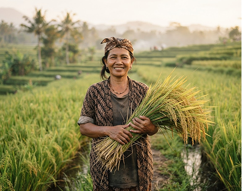
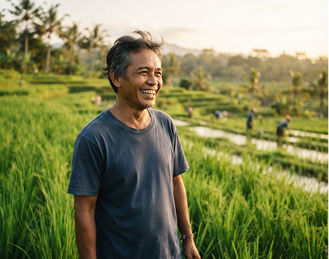
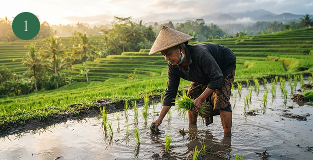

Cerita di Balik Setiap Butir Beras
Dedikasi, kearifan lokal, dan kerja keras para petani yang merawat ekosistem sawah Nusantara demi menghadirkan pangan sehat bagi keluarga Indonesia.
PILAR UTAMA BERAS DOMBA
Para sosok penggerak pertanian organik regeneratif yang menjadi jantung kualitas Beras Domba.
 Petani Senior • Lahan Organik
Petani Senior • Lahan Organik
Pak Obed
Ibu Wen

Spesialis Kompos Organik
Koordinator Integrasi SilvopasturePak Hendra

Kehidupan di Sawah & Dedikasi Sejak Fajar
Sebelum matahari terbit sepenuhnya di ufuk timur, para petani mitra kami telah menapaki pematang sawah. Mereka memeriksa aliran irigasi alami, memastikan kelembapan tanah terjaga, serta merawat tanaman padi tanpa sedikit pun bahan kimia sintetis.
Melalui siklus terpadu antara peternakan domba dan lahan persawahan, limbah organik diolah menjadi pupuk kompos kaya mikroorganisme yang menyuburkan tanah secara alami dan ramah lingkungan.
— Komunitas Petani Padi Lestari NusantaraKemitraan yang Berkelanjutan & Sejahtera
Kami menerapkan skema kemitraan langsung yang transparan untuk memutus rantai panjang tengkulak. Setiap hasil panen petani dibeli dengan harga kontrak yang adil di atas rata-rata pasar.
Dengan membeli Beras Domba, keluarga Anda turut mendukung kemandirian petani lokal sekaligus melestarikan ekosistem pertanian organik Indonesia.
Peta Persebaran Komunitas Mitra
Sentra produksi dan kelompok tani mitra Beras Domba tersebar di kawasan pegunungan subur dengan sumber mata air alami.